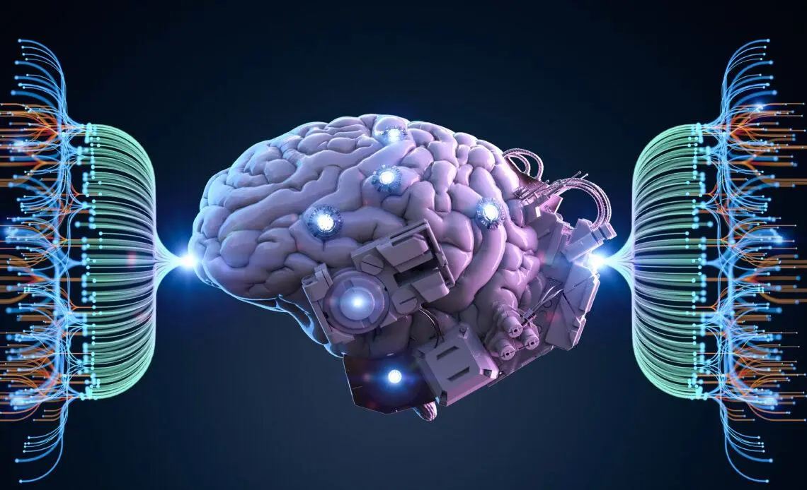
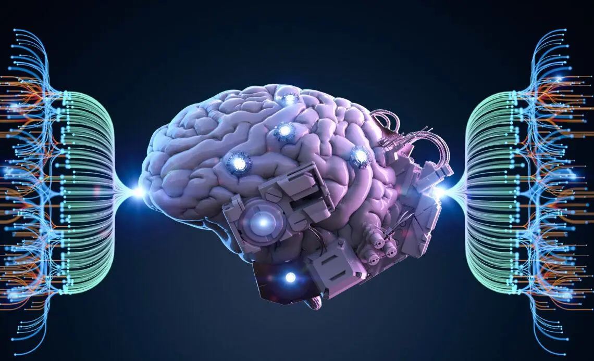

التعلم الآلي
التعلم الآلي (Machine Learning) هو فرع من الذكاء الاصطناعي (AI) يهدف إلى تطوير أنظمة قادرة على التعلم من البيانات واتخاذ القرارات أو التنبؤات دون أن تتم برمجتها بشكل صريح للقيام بذلك. يعتمد التعلم الآلي على خوارزميات ونماذج رياضية تُستخدم لتحليل البيانات واستخراج الأنماط، مما يسمح للنظام بتحسين أدائه مع مرور الوقت.
تنقسم أنواع التعلم الآلي إلى أربعة أنواع رئيسية: التعلم بالإشراف، حيث يتم تدريب النموذج باستخدام بيانات مُسماة للتنبؤ أو التصنيف؛ التعلم غير المُشرف، الذي يُستخدم لاكتشاف الأنماط والعلاقات في البيانات غير المُسماة؛ التعلم شبه المُشرف، وهو مزيج من الاثنين باستخدام كمية صغيرة من البيانات المُسماة مع بيانات غير مُسماة؛ والتعلم المعزز، الذي يعتمد على تفاعل النظام مع البيئة للحصول على مكافآت أو تجنب العقوبات لاتخاذ قرارات مثالية.
التعلم العميق
هو فرع من فروع الذكاء الاصطناعي (AI) وتحديدًا من التعلم الآلي (Machine Learning)، يركز على تدريب النماذج باستخدام شبكات عصبية اصطناعية متعددة الطبقات (Deep Neural Networks). يهدف التعلم العميق إلى محاكاة طريقة عمل الدماغ البشري في معالجة البيانات واتخاذ القرارات، وهو مصمم للتعامل مع البيانات الكبيرة والمعقدة.
تشمل تطبيقات التعلم العميق مجموعة واسعة من المجالات، مثل التعرف على الصور (التعرف على الوجوه أو الأشياء)، ومعالجة اللغة الطبيعية (NLP) في الترجمة الآلية وتحليل النصوص، والسيارات ذاتية القيادة لاتخاذ قرارات بناءً على البيانات الحسية، والتشخيص الطبي لتحليل صور الأشعة والتعرف على الأمراض، والألعاب الذكية لتحسين استراتيجيات اللعب في ألعاب مثل الشطرنج وGo.
الروبوتات الذكية
الروبوتات الذكية هي آلات متقدمة مجهزة بتقنيات الذكاء الاصطناعي (AI) وتم تصميمها لأداء مهام محددة أو متعددة مع القدرة على التعلم والتكيف مع البيئة المحيطة. تعتمد الروبوتات الذكية على تقنيات مثل التعلم الآلي (Machine Learning)، معالجة اللغة الطبيعية (NLP)، ورؤية الكمبيوتر (Computer Vision) لتفهم البيانات واتخاذ قرارات مستقلة.
تُستخدم الروبوتات الذكية في مجموعة واسعة من المجالات، حيث تُحسن الكفاءة والدقة في الصناعة من خلال تجميع السيارات والعمل في البيئات الخطرة، وتُسهم في الرعاية الصحية عبر الروبوتات الجراحية ورعاية المرضى. كما تنتشر في الخدمات المنزلية مثل المكانس الذكية والمساعدات الافتراضية، وفي الأمن والدفاع للاستطلاع وإزالة الألغام. تُستخدم أيضًا في الزراعة لمراقبة الأراضي وحصد المحاصيل، وفي البحث والإنقاذ للوصول إلى المناطق الصعبة أثناء الكوارث. علاوة على ذلك، تُساهم في التعليم بتقديم دروس تفاعلية، وفي النقل والخدمات اللوجستية بإدارة المخازن ونقل البضائع بكفاءة عالية.
تحليل البيانات
تحليل البيانات هو عملية منهجية تهدف إلى فحص البيانات، تنظيفها، تحويلها، وتفسيرها لاستخلاص معلومات مفيدة تساعد في اتخاذ القرارات. يتم استخدام تقنيات وأدوات مختلفة لتحليل البيانات بناءً على طبيعة البيانات والأهداف المرجوة.
تشمل أنواع تحليل البيانات الرئيسية: التحليل الوصفي الذي يركز على وصف البيانات واكتشاف الأنماط، والتحليل التشخيصي الذي يبحث في أسباب الظواهر، والتحليل التنبؤي الذي يستخدم النماذج للتنبؤ بالأحداث المستقبلية، بالإضافة إلى التحليل الوصفي الذي يقترح إجراءات بناءً على النتائج.
 
